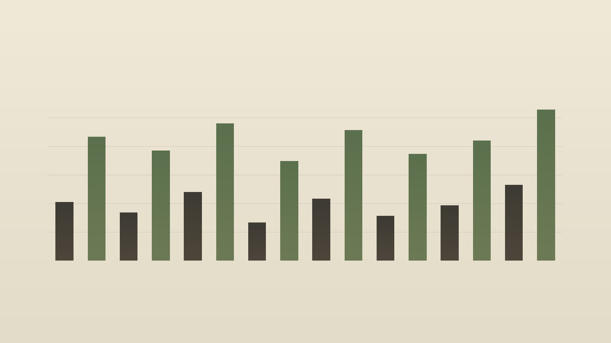

Eight studies · 8 bars · keys, then a reference answer
Gentle voicings, an economical melodic answer, a small fixed roll, and one chord plan per study. The answer is a reference. It is not part of the core count.

The note positions come from the fetched MIDI. The catalog does not embed the note list.
Upper keys, C4 and above
Lower keys, below C4
Melodic answer, reference, not in the keys file
upper keys lower keys velocity 64 and up answer
Core is keys. Reference is the melodic answer. Both variations are listed. They are alternatives, not a stack.
Keys use MIDI 48 to 76, at most four notes at once. Notes below 60 are shown as the lower hand. Notes from 60 up are the upper hand. The melodic answer is monophonic, MIDI 60 to 81, a reference, and not part of the core count.
Keys use a fixed roll. The highest voice has offset 0. Each lower voice is 20 ticks later, so three notes use 40, 20, and 0 from low to high, and the one four-note chord uses 60, 40, 20, and 0. performed_start = nominal_start + offset. Duration is measured from the performed start. The melodic answer offset is 0. Its pocket is in the written rhythm. Offsets are bounded and shared by voice position. They are not chosen independently for every note.
Pitch instability, noise, saturation, and filtering are not in the MIDI files. The renderer does not apply them.
Use either the combined arrangement or the separate parts. Do not stack the part files on top of the combined file.
| Part | Role | Var | Count | BPM | Bars | Notes |
|---|---|---|---|---|---|---|
| s01.keys.a | keys | a | core | 72 | 8 | 25 |
| s01.keys.b | keys | b | core | 72 | 8 | 24 |
| s01.answer.a | melodic-answer | a | reference | 72 | 8 | 4 |
| s01.answer.b | melodic-answer | b | reference | 72 | 8 | 4 |
| s02.keys.a | keys | a | core | 66 | 8 | 24 |
| s02.keys.b | keys | b | core | 66 | 8 | 24 |
| s02.answer.a | melodic-answer | a | reference | 66 | 8 | 4 |
| s02.answer.b | melodic-answer | b | reference | 66 | 8 | 2 |
| s03.keys.a | keys | a | core | 80 | 8 | 8 |
| s03.keys.b | keys | b | core | 80 | 8 | 24 |
| s03.answer.a | melodic-answer | a | reference | 80 | 8 | 2 |
| s03.answer.b | melodic-answer | b | reference | 80 | 8 | 4 |
| s04.keys.a | keys | a | core | 64 | 8 | 24 |
| s04.keys.b | keys | b | core | 64 | 8 | 16 |
| s04.answer.a | melodic-answer | a | reference | 64 | 8 | 3 |
| s04.answer.b | melodic-answer | b | reference | 64 | 8 | 2 |
| s05.keys.a | keys | a | core | 76 | 8 | 24 |
| s05.keys.b | keys | b | core | 76 | 8 | 16 |
| s05.answer.a | melodic-answer | a | reference | 76 | 8 | 3 |
| s05.answer.b | melodic-answer | b | reference | 76 | 8 | 3 |
| s06.keys.a | keys | a | core | 60 | 8 | 24 |
| s06.keys.b | keys | b | core | 60 | 8 | 24 |
| s06.answer.a | melodic-answer | a | reference | 60 | 8 | 4 |
| s06.answer.b | melodic-answer | b | reference | 60 | 8 | 2 |
| s07.keys.a | keys | a | core | 84 | 8 | 16 |
| s07.keys.b | keys | b | core | 84 | 8 | 24 |
| s07.answer.a | melodic-answer | a | reference | 84 | 8 | 3 |
| s07.answer.b | melodic-answer | b | reference | 84 | 8 | 3 |
| s08.keys.a | keys | a | core | 70 | 8 | 40 |
| s08.keys.b | keys | b | core | 70 | 8 | 12 |
| s08.answer.a | melodic-answer | a | reference | 70 | 8 | 4 |
| s08.answer.b | melodic-answer | b | reference | 70 | 8 | 2 |
Recorded reading · study 01 variation A, all 8 bars
This MP3 is 26.70 seconds. preview, not a master. The film is 26.67 seconds and shows preview, not master.
No program changes are encoded. A conventional GM player will normally use its default piano program for pitched channels unless configured otherwise; compatible GM channel 10 percussion is treated separately. Player behavior may vary.
No human listening audition was performed for this build.
The GitHub repository is https://github.com/mizcausevic-dev/lofi-mellow-keys and it is public. The catalog page is https://mizcausevic-dev.github.io/lofi-mellow-keys/ .